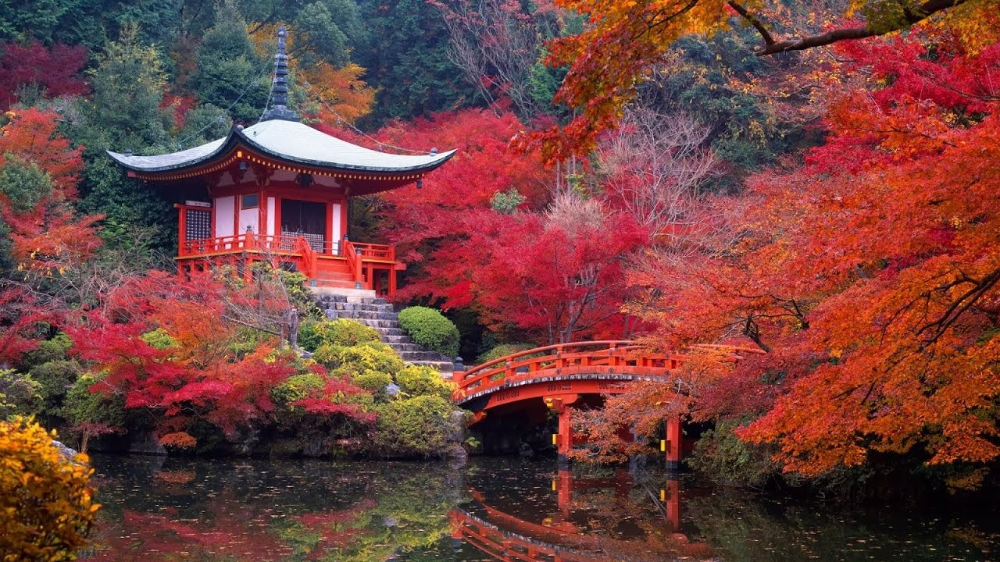
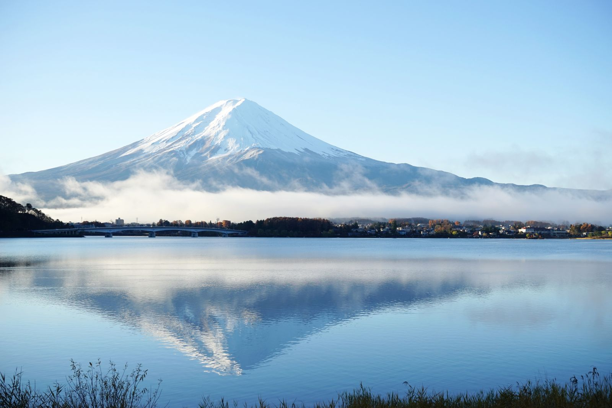

Япония. География, описание и характеристики страны
Территория Японии составляет около 370 тыс. квадратных метров, что позволяет ей занимать лишь 61-ую строчку в мировом рейтинге стран с самой большой территорией. Однако, количество проживающих на этой территории людей 129 млн. человек (по состоянию на 2015 год), ставит Японию среди самых густонаселенных стран мира. Страна занимает 10-ую строчку в списке стран по количеству проживающих людей.
Географические характеристики

Япония – островное государство. Оно расположено на 4 больших островах, названия которых знакомы всем любителям географии: Хонсю, Хоккайдо, Сикоку, Кюсю. Они составляют 98% территории страны. Остальные 2% приходятся на 3 тыс. маленьких и порой даже мелких островов. Для того, чтобы держать связь между разрозненными территориями, острова объединились с помощью системы мостов и тоннелей, прорытых под землей и под водой. Именно так в Японии было создано единое сухопутное пространство.
Природа
Горы и равнины
Страну Восходящего Солнца часто называют еще и страной крутых склонов. И это соответствует действительность. Подавляющее большинство (примерно 3/4) всех горных массивов страны слишком разрознены, чтобы их можно было осваивать. Контуры гор угловатые, с заостренными контурами. Исключение составляют лишь горные массивы, расположенные на юге Хонсю и Кюсю. Да и возле берегов острова Хоккайдо можно заметить плавные очертания горных массивов. Самые высокие горы, по аналогии с европейскими, носят название Японские Альпы. Они расположены в центре острова Хонсю, недалеко от Токио. Они достаточно высоки – вершины высотой в 3000 метров над уровнем моря тут не редкость. Благодаря своему внешнему виду и привлекательности они являются туристической достопримечательностью.